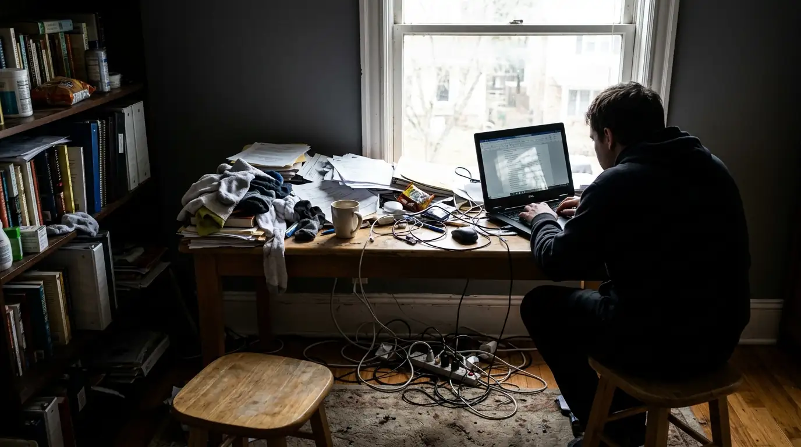
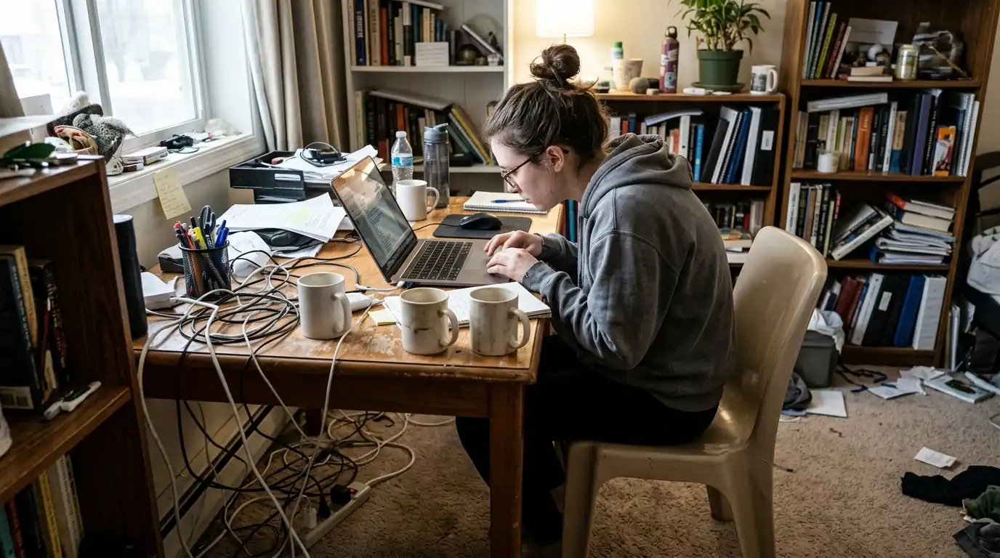

5 Kesalahan Fatal Saat Menata Meja Kerja WFH di Rumah
Kesalahan menata meja wfh meliputi posisi membelakangi jendela, monitor terlalu rendah, dan kabel berantakan yang memicu nyeri leher serta menurunkan produktivitas harian. Memahami tata letak furnitur kerja yang tepat di rumah menjadi kunci utama menjaga stamina tubuh dan fokus kerja jangka panjang.


Ilustrasi penataan meja kerja WFH di rumah: Penempatan layar di depan jendela tanpa kontrol pencahayaan memicu pantulan silau yang merusak kenyamanan visual.
- Posisi Jendela & Silau: Menempatkan meja membelakangi sumber cahaya menyebabkan efek bayangan gelap pada layar monitor dan memicu ketegangan mata dini.
- Tinggi Meja & Monitor: Monitor yang diletakkan terlalu rendah memaksa leher menekuk ke depan (text neck), meningkatkan risiko sakit leher hingga 3 kali lipat.
- Manajemen Kabel: Kabel kusut di bawah meja tidak hanya merusak estetika, namun juga membatasi ruang peregangan kaki yang penting bagi sirkulasi darah.
- Solusi Terpadu: Menggunakan Paket WFH Hemat dari Perlengkapan Kantor memberikan kombinasi meja berdimensi pas dan kursi berfitur lumbar support terukur.
- Mengapa Posisi Meja WFH Membelakangi Jendela Berbahaya Bagi Mata?
- Bagaimana Cara Menyesuaikan Ketinggian Meja dan Posisi Monitor yang Tepat?
- Mengapa Manajemen Kabel dan Penataan Perlengkapan Meja Sering Diabaikan?
- Apa Pengaruh Duduk Terlalu Lama Tanpa Dukungan Kursi Ergonomis?
- Bagaimana Standar Pengaturan Pencahayaan Layar Monitor untuk Mencegah Silau?
- Komparasi Setup Meja WFH Sembarangan vs Standar Ergonomis
- Pertanyaan Seputar Penataan Meja WFH (FAQ)
- Kesimpulan Praktis & Solusi Paket WFH
Mengapa Posisi Meja WFH Membelakangi Jendela Berbahaya Bagi Mata?
Posisi meja wfh membelakangi jendela menyebabkan pantulan cahaya alami langsung menerpa layar kaca monitor, menciptakan efek silau kontras tinggi yang memaksa pupil mata terus-menerus berkontraksi secara tidak wajar.
Banyak pekerja profesional yang bekerja dari rumah (work from home) mengira bahwa meletakkan meja tepat di depan jendela besar adalah ide terbaik karena mendapatkan suplai sinar matahari langsung. Namun, ketika punggung Anda menghadap ke arah jendela dan monitor berhadapan langsung dengan sinar matahari, layar kerja akan tertutup bayangan tubuh Anda sendiri atau pantulan silau (glare) yang luar biasa tajam. Kondisi ini membuat teks dokumen menjadi sulit dibaca, memicu refleks memicingkan mata, dan dalam waktu kurang dari 2 jam kerja dapat mengakibatkan sakit kepala bagian depan (tension headache).
Menurut data riset dari International Ergonomics Association (IEA) periode 2025, sebanyak 68% pekerja remote mengalami gejala Computer Vision Syndrome (CVS) dan gangguan muskuloskeletal akibat setup pencahayaan meja kerja rumah yang tidak memperhitungkan sudut datang sinar matahari. Solusi terbaik adalah memposisikan meja kerja secara menyamping atau tegak lurus 90 derajat terhadap jendela utama ruangan, serta melengkapi jendela dengan gorden jenis blackout atau tirai roller blind yang dapat diatur kemiringan bilahnya.
Bagaimana Cara Menyesuaikan Ketinggian Meja dan Posisi Monitor yang Tepat?
Penyesuaian tinggi meja kerja dan monitor wajib mengikuti aturan sudut 90 derajat siku tangan serta meletakkan tepi atas layar sejajar lurus dengan pupil mata normal.
Salah satu pemicu utama cedera leher dan punggung bagian atas adalah kebiasaan menaruh laptop langsung di atas permukaan meja tanpa dudukan tambahan (laptop riser). Saat layar laptop berada jauh di bawah garis pandang alami, tulang leher manusia terpaksa menunduk antara 30 hingga 45 derajat. Beban gravitasi kepala yang semula hanya 5 kg melonjak menjadi setara 20 hingga 27 kg pada bantalan servikal leher. Kondisi menunduk konstan selama 8 jam jam kerja harian ini adalah akar utama timbulnya saraf terjepit dan kejang otot bahu (trapezius spasm).
Untuk mengatasi problem ergonomi mendasar ini, Anda memerlukan meja kerja dengan ketinggian standar 72–75 cm dari lantai atau meja kerja model adjustable standing desk. Pasang monitor eksternal berukuran minimal 24 inci pada lengan monitor (monitor arm) fleksibel, atau gunakan stand laptop terpisah yang dipadukan dengan keyboard dan mouse nirkabel. Dengan setup ini, siku lengan Anda akan membentuk sudut siku 90 derajat yang rileks di atas meja tanpa harus mengangkat bahu.

Setup ruang kerja WFH ideal dari Perlengkapan Kantor: Meja kerja dengan cable tray terpadu dan pencahayaan seimbang menjaga fokus kerja optimal.
Mengapa Manajemen Kabel dan Penataan Perlengkapan Meja Sering Diabaikan?
Manajemen kabel yang berantakan membatasi pergerakan kaki di bawah meja dan menciptakan polusi visual yang meningkatkan tingkat stres mental saat bekerja.
Kerapihan ruang bawah meja sering kali luput dari perhatian para pekerja rumahan. Kabel adaptor laptop, kabel monitor, colokan charger ponsel, hingga kabel printer yang menjuntai di lantai bukan hanya merusak estetika ruangan kerja minimalis, tetapi juga menghalangi kaki Anda untuk meluruskan lutut secara periodik. Kaki yang terhambat bergerak dan terpaksa terlipat ke belakang menghambat sirkulasi darah balik ke jantung, memicu pembengkakan pergelangan kaki dan varises.
Terapkan sistem cable management tray horizontal di bawah kolong meja, gunakan selongsong kabel spiral, serta tempatkan colokan ekstensi di dinding atau di balik meja. Selain itu, organisir alat tulis kantor (ATK), binder dokumen, dan sticky notes ke dalam laci meja kabinet samping beroda (mobile pedestal) agar permukaan meja kerja utama tetap bersih dan hanya memuat perangkat kerja esensial.
Apa Pengaruh Duduk Terlalu Lama Tanpa Dukungan Kursi Ergonomis?
Duduk menggunakan kursi makan atau kursi tanpa penopang lumbar memusatkan seluruh tekanan beban tubuh pada bantalan tulang ekor dan ruas lumbal L4-L5.
Banyak orang menghabiskan jutaan rupiah untuk membeli laptop dan gawai terbaru, tetapi tetap menggunakan kursi kayu makan atau kursi gaming murahan tanpa mekanisme sirkulasi udara yang baik. Kursi yang tidak dirancang untuk aktivitas kerja kantor tidak memiliki lekukan lumbar support yang menopang kurva alami tulang punggung bawah (lordosis). Akibatnya, dalam 30 menit pertama duduk, punggung Anda akan secara otomatis membungkuk (slouching), menyebabkan beban kompresi pada diskus intervertebralis meningkat hingga 190%.
Berdasarkan survei industri dari B2B Workplace Wellness Institute pada Q1 2026, perusahaan dan individu yang melakukan investasi pada pengadaan furnitur meja dan kursi kerja ergonomis mencatatkan peningkatan efisiensi dan output kerja hingga 34% serta penurunan drastis pada absensi kerja akibat keluhan sakit pinggang. Kursi kerja ergonomis dengan sandaran jaring (breathable mesh) dan penopang lengan 3D memungkinkan bahu beristirahat tanpa beban berlebih.
Bagaimana Standar Pengaturan Pencahayaan Layar Monitor untuk Mencegah Silau?
Pencahayaan layar monitor harus diseimbangkan dengan intensitas lampu ruangan sekitar 300–500 lux agar tidak tercipta kontras tajam yang melelahkan retina mata.
Kesalahan kelima yang sering dilakukan adalah bekerja dalam ruangan remang-remang dengan kecerahan monitor disetel maksimal 100%. Situasi ini menciptakan efek bioskop yang sangat merusak akomodasi visual mata. Sebaliknya, menyalakan lampu plafon ruangan yang posisinya tepat di atas kepala tanpa penutup (diffuser) juga akan menciptakan bayangan keras di atas keyboard meja kerja.
Gunakan lampu kerja meja (desk lamp) tipe asymmetric optical light bar yang dipasang di atas monitor. Lampu jenis ini menerangi seluruh permukaan meja kerja dan dokumen tanpa memantulkan cahaya kembali ke layar monitor dan tanpa menyorot langsung ke kornea mata pengguna.
Komparasi Setup Meja WFH Sembarangan vs Standar Ergonomis
Berikut adalah perbandingan komprehensif antara penataan meja kerja rumah konvensional tanpa perhitungan ergonomi dengan standar setup profesional dari Perlengkapan Kantor:
| Parameter Setup | Penataan Meja Sembarangan | Standar Paket WFH Perlengkapan Kantor | Dampak Kesehatan & Output |
|---|---|---|---|
| Arah Hadap Jendela | Membelakangi jendela secara langsung (layar silau) | Posisi menyamping 90 derajat dengan diffuser cahaya | Mata tetap segar, bebas silau dan bebas migrain |
| Posisi & Tinggi Layar | Laptop ditaruh di atas meja (leher menunduk 40°) | Monitor eksternal/stand sejajar garis mata horizontal | Beban servikal leher berkurang drastis hingga 80% |
| Kualitas Kursi Kerja | Kursi makan/sofa tanpa penopang pinggang | Kursi jaring ergonomis dengan lumbar support dinamis | Tulang belakang tertopang sempurna sepanjang hari |
| Ruang Kolong Meja | Kabel bertumpuk, sempit, dan rawan tersangkut | Cable management terpadu & laci samping ringkas | Ruang kaki leluasa, sirkulasi darah lancar |
| Tata Cahaya Meja | Ruangan gelap hanya mengandalkan layar menyala | Screenbar asimetris 400 lux merata di area kerja | Fokus visual stabil, kerja lembur tanpa mata kering |
Pertanyaan Seputar Penataan Meja WFH (FAQ)
Kesimpulan Praktis
Menata meja kerja di rumah bukan hanya tentang estetika ruang semata, melainkan investasi jangka panjang terhadap kesehatan tulang punggung, penglihatan mata, dan ketahanan produktivitas harian Anda. Menghindari kesalahan menata meja wfh sedini mungkin akan menghindarkan Anda dari biaya pengobatan fisioterapi yang mahal di masa mendatang.
Tingkatkan kenyamanan ruang kerja remote Anda sekarang juga dengan pilihan furnitur berstandar ergonomis internasional. Dapatkan penawaran istimewa dan promo bundling terbaik dengan Beli Paket WFH Hemat hanya di Perlengkapan Kantor!
Penulis: Tim Spesialis Perlengkapan Kantor
Divisi Konsultasi Ergonomi & Furnitur Kerja Rumah di Perlengkapan Kantor. Berdedikasi menyajikan panduan penataan ruang kerja sehat, efisien, dan ramah postur tubuh untuk para profesional modern di seluruh Indonesia.